Wissensbibliothek
Das gesammelte Wissen über Getreide, Teig und Technik. Von der Chemie des Korns bis zur Physik des Ofens.
I. Die Theorie (Grundlagen)
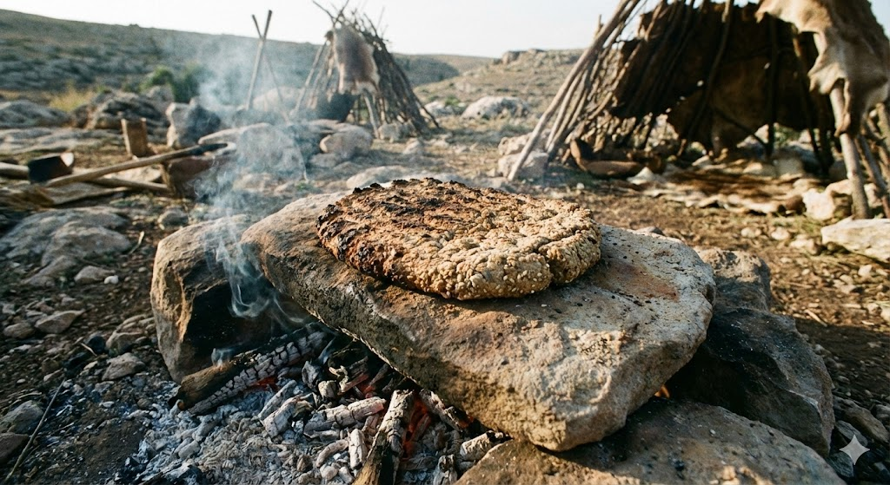
Die Entstehung
Vom heißen Stein der Urzeit bis zum modernen Sauerteigbrot.
Lesen

Geschichte der Mehle
Atlas der Mehle. Weizen, Roggen und die Physik der Stärke.
Lesen

Typenfrei (Urkorn)
Emmer, Einkorn und Dinkel. Backen jenseits der Industrienorm.
Lesen

Triebmittel
Der Motor des Teigs. Hefe, Sauerteig, Backpulver und Chemie.
Lesen
II. Brot & Form (Alltag)
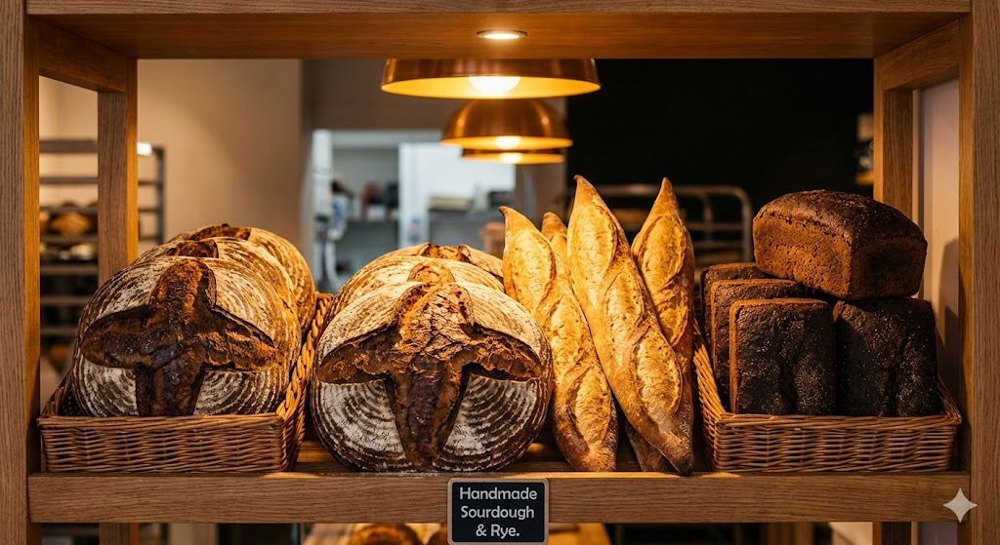
Die großen Laibe
Das tägliche Brot. Sauerteig, wilde Porung und Kruste.
Lesen
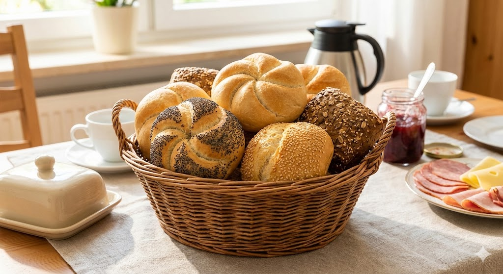
Kleinbrote
Das Glück im Korb. Kaisersemmel, Schrippe und Brötchen.
Lesen

Soft Buns & Burger
Warum Fett weich macht und wie der perfekte Burger Bun gelingt.
Lesen

Form & Struktur
Vom Zopf zum Toast. Wie Flechten und Kastenformen die Krume verändern.
Lesen
III. Spezial & Alternativ
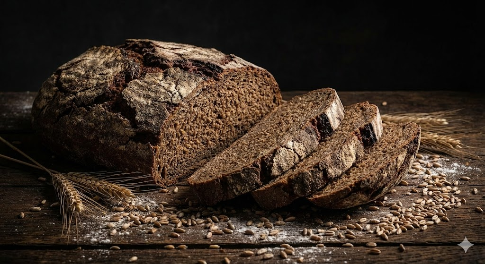
Roggen pur
Das schwarze Gold. Pumpernickel, Sauerteig-Pflicht und Pentosane.
Lesen

Lauge & Bagels
Chemie der Bräunung. Natronlauge und gekochte Teige.
Lesen
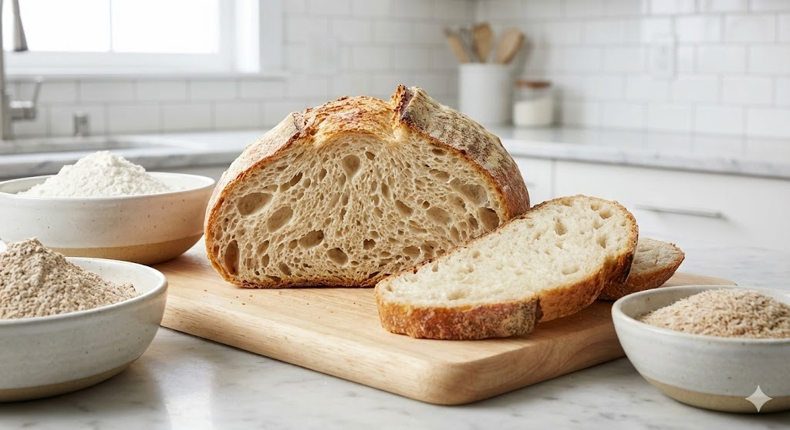
Glutenfrei & Alternativ
Backen ohne Kleber. HPMC, Flohsamen und Low-Carb.
Lesen

Das zweite Leben
Resteverwertung. Altbrot als Brühstück, Knödel und Brösel.
Lesen
IV. Fladen & Welt

Fladenbrote
Die Mutter aller Brote. Naan, Pita und Focaccia.
Lesen
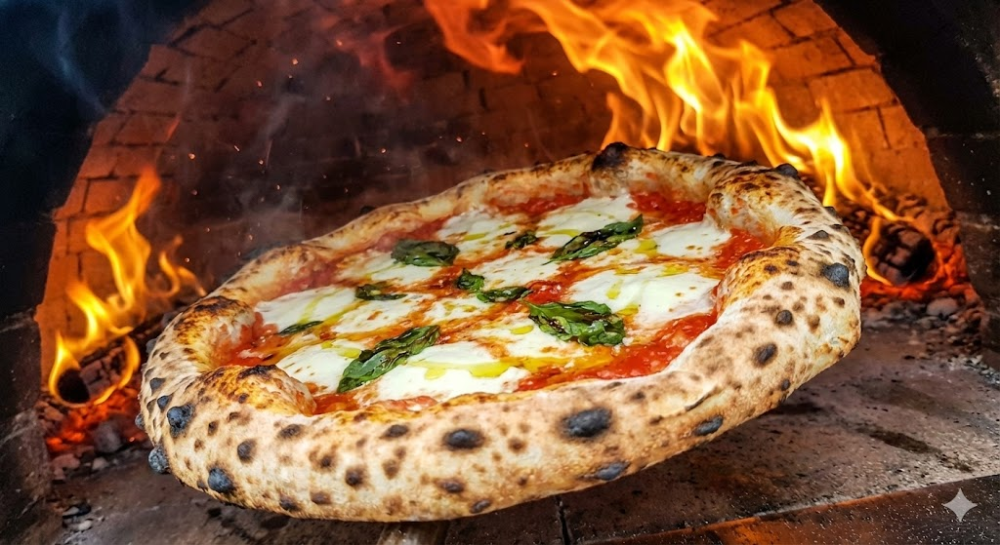
Pizza
485°C Hitze, Hydration und die Stile von Neapel bis NY.
Lesen

Tortillas & Tacos
Die Sonne Mexikos. Nixtamalisation und Mais-Chemie.
Lesen
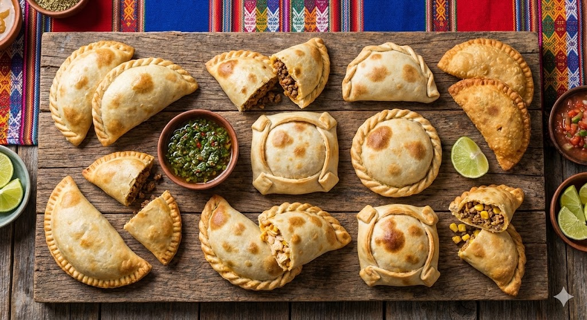
Empanadas
Die Kunst des Einhüllens. Mürbeteig und Falttechniken.
Lesen

Asia Bakery
Tangzhong, Shokupan und gedämpfte Buns.
Lesen

Globale Spezialitäten
Exoten: Afrikas Swallows, Bannock und Mochi.
Lesen
V. Fein & Süß
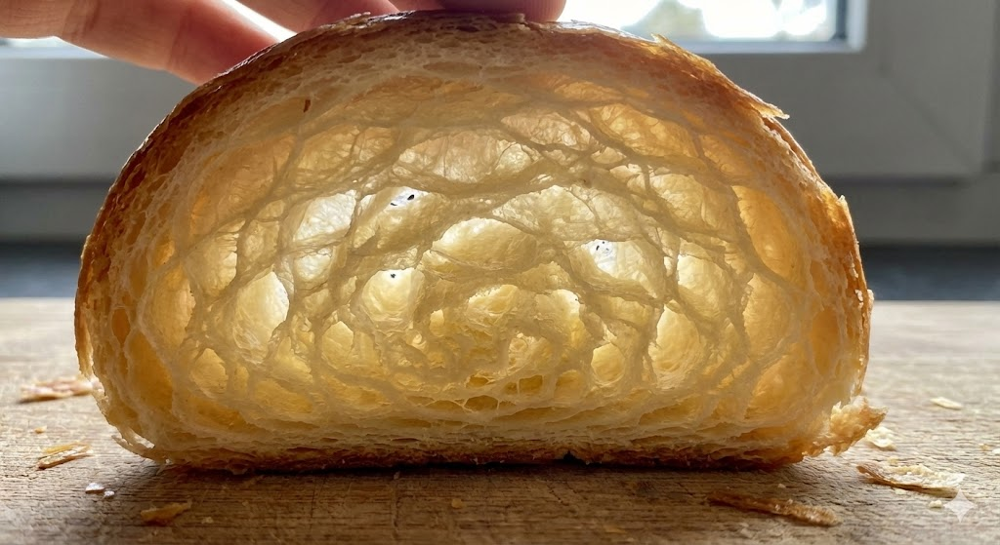
Viennoiserie
Die Kunst der Schichten. Croissants und Plunder.
Lesen

Reiche Teige
Panettone, Stollen und der osmotische Druck von Zucker.
Lesen
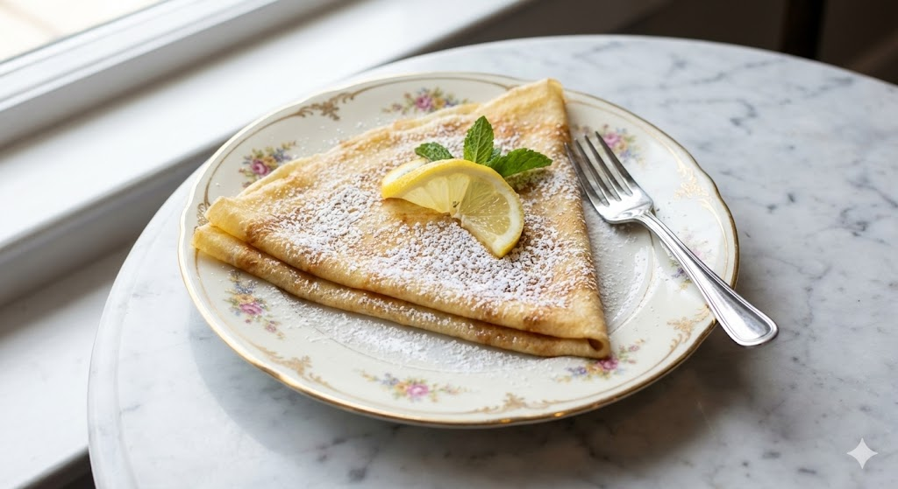
Pfannkuchen
Flüssige Teige. Crêpes, Galettes und Kaiserschmarrn.
Lesen
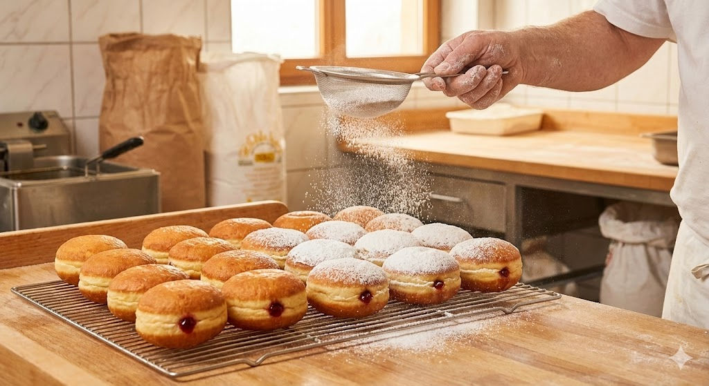
Siedegebäck
Gold aus dem Fett. Berliner, Krapfen und Donuts.
Lesen

Rührteige & Muffins
Emulsionen und chemischer Trieb. Wenn Gluten unerwünscht ist.
Lesen
VI. Kochtopf (Teig ohne Ofen)

Pasta
Architektur zum Essen. Hartweizen, Ei und Formgebung.
Lesen

Spätzle & Knöpfle
Das Gold der Alpen. Schaben, Drücken und Dunst.
Lesen
Knödel & Dumplings
Gefüllt und gekocht. Von Thüringen bis China.
Lesen
VII. Technik & Wissen
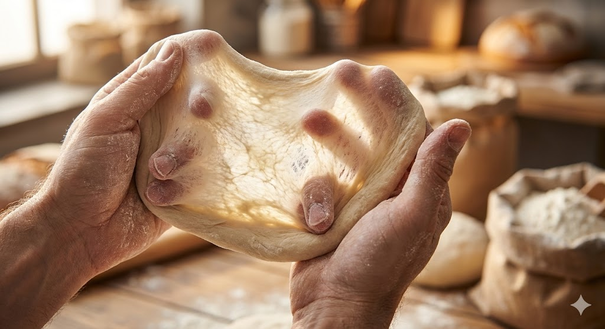
Das Handwerk
Wirken, Falten, Schneiden. Die Rheologie des Teigs.
Lesen

No-Knead
Zeit statt Kraft. Topfbrot, Autolyse und High Hydration.
Lesen

Feuer, Stein & Dampf
Ofen-Physik. Strahlungshitze, Schwaden und Backstahl.
Lesen

Die Pannenhilfe
Fehleranalyse. Übergare, Untergare und Teig-Rettung.
Lesen

Brot & Gesundheit
Biochemie. FODMAPs, Phytin-Abbau und Bekömmlichkeit.
Lesen
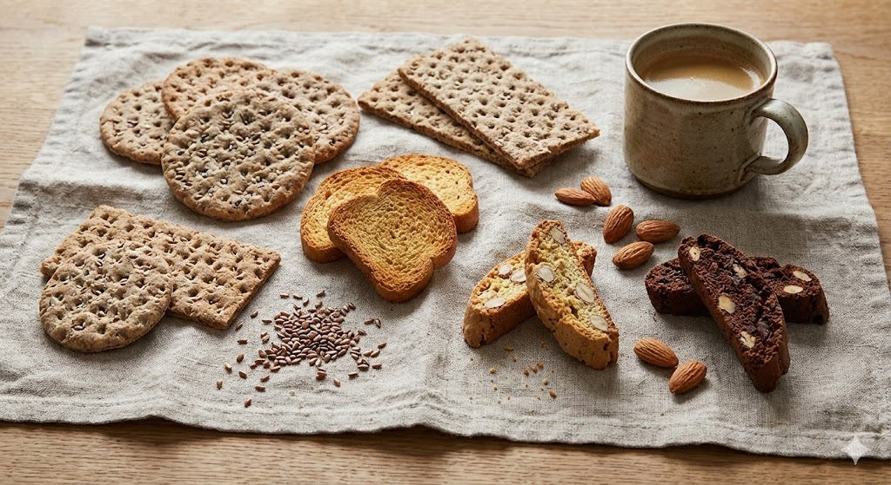
Hart & Trocken
Konservierung. Zwieback, Knäckebrot und Matze.
Lesen

Gestern & Morgen
Zeitreise. Pompeji, Notbrote und Space Bread.
Lesen